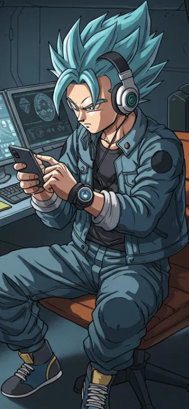

Cyberstorm
Kael Takeda, conhecido no submundo digital como "Cyberstorm", é um programador prodígio especializado em segurança cibernética e inteligência artificial. Com um intelecto afiado e reflexos rápidos, ele domina linguagens de programação como se fossem extensões de sua própria mente.